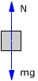
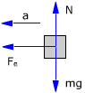
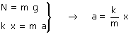
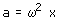
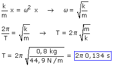

Consideramos el bloque en la posición de equilibrio
 |
 |
En la posición de equilibrio el muelle no está deformado. No hay fuerza tangencial
|
Llevamos el bloque a una distancia x de la posición de equilibrio y soltamos
Observa que estamos desplazando el bloque hacia la derecha, mientras que en el problema el bloque se desplaza hacia la izquierda de la posición de equilibrio. Para calcular el período no importa el sentido de la elongación
|
 |
 |

El sentido de la aceleración es contrario a la elongación (Separación de la posición de equilibrio) y su módulo es proporcional a esta. Estas dos características son típicas del movimiento armónico
En Cinemática el módulo de la aceleración de un movimiento armónico vale:

(Se ha suprimido el signo menos porque se trata de un módulo)
Evidentemente el módulo de la aceleración calculada en Dinámica tiene que ser igual al módulo de la aceleración calculada en Cinemática:
